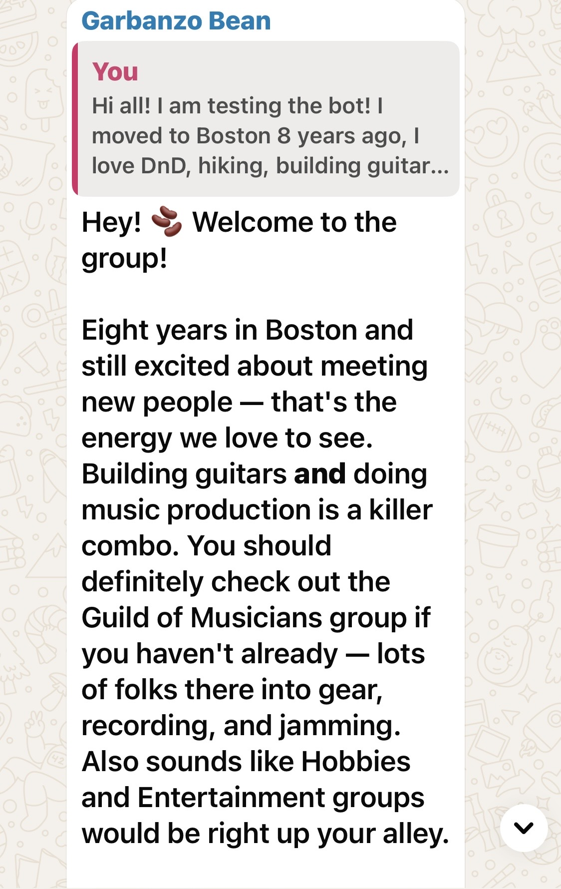
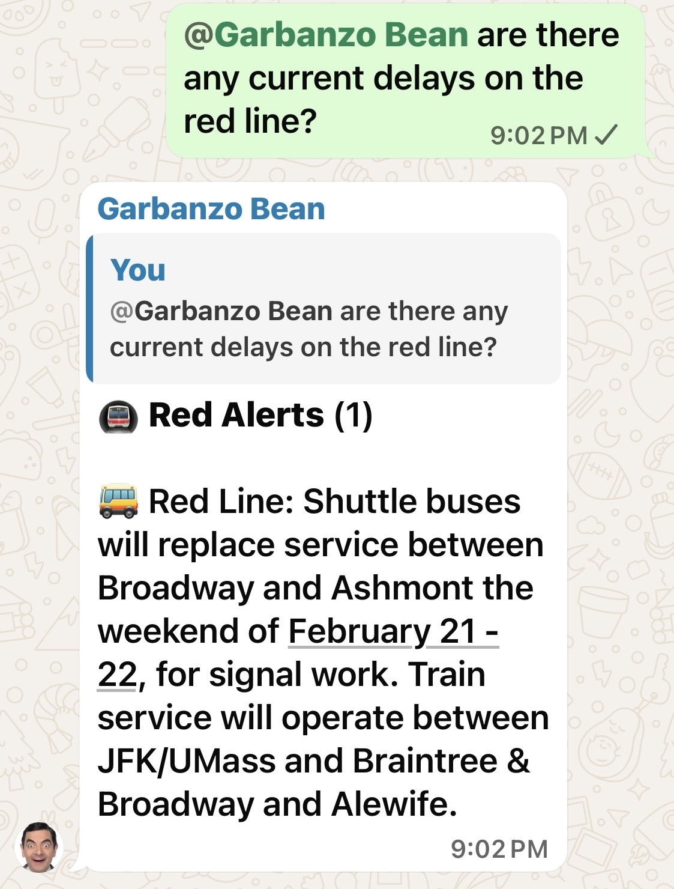
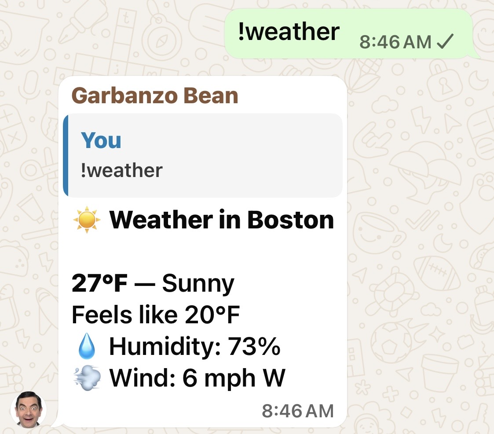
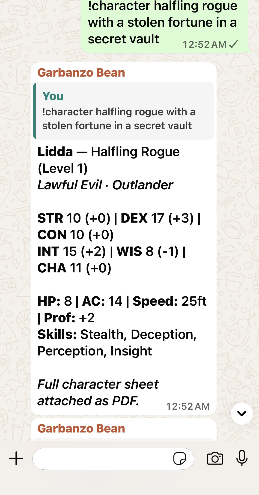

Answers with live data
Native tool calling: ask about transit, weather, venues, news, or books in plain language — the model pulls real data mid-reply. No commands to memorize.
Self-hosted · Apache-2.0 · WhatsApp-first
Garbanzo sits in your group chats and actually helps — answering with live transit and weather data, welcoming newcomers, remembering what your community cares about. Multi-provider LLM routing with failover, and every byte stays on a machine you own.
docker compose up -d · runs on a Raspberry Pi 5 · SQLite or Postgres
Three commands on any Docker host — a Raspberry Pi 5 is plenty. Your keys, your data, your volumes.
# 1. configure
git clone https://github.com/jjhickman/garbanzo-bot.git
cd garbanzo-bot && npm run setup
# 2. run
docker compose up -dNative tool calling: ask about transit, weather, venues, news, or books in plain language — the model pulls real data mid-reply. No commands to memorize.
Durable facts — who runs book club, where trivia happens — extracted automatically or curated by you, recalled across every conversation with vector retrieval.
Detects event proposals, enriches them with weather and transit, and nudges the chat before start time. Welcomes intros. Recaps the week for you every Sunday.
Pattern + AI moderation with human-in-the-loop owner alerts, strike tracking, and rate limits. Edits can't dodge it — changed messages get re-checked.
OpenAI GPT-5 family, Claude, Gemini, Bedrock, OpenRouter — configurable order with automatic failover, per-provider models, prompt caching, and cost tracking. Optional local Ollama for small talk.
A token-gated admin page for spend and activity, Prometheus metrics, and a pre-provisioned Grafana dashboard — one compose profile away, on the same Pi.
Straight from a production deployment on WhatsApp.




Garbanzo is an independent open-source project. Support funds provider integrations, AI workflow improvements, and reliable releases.
Roadmap updates and supporter shout-outs.
For individual supportersPriority issue triage and monthly maintainer notes.
For active community operatorsOnboarding review and release planning input.
For production teams